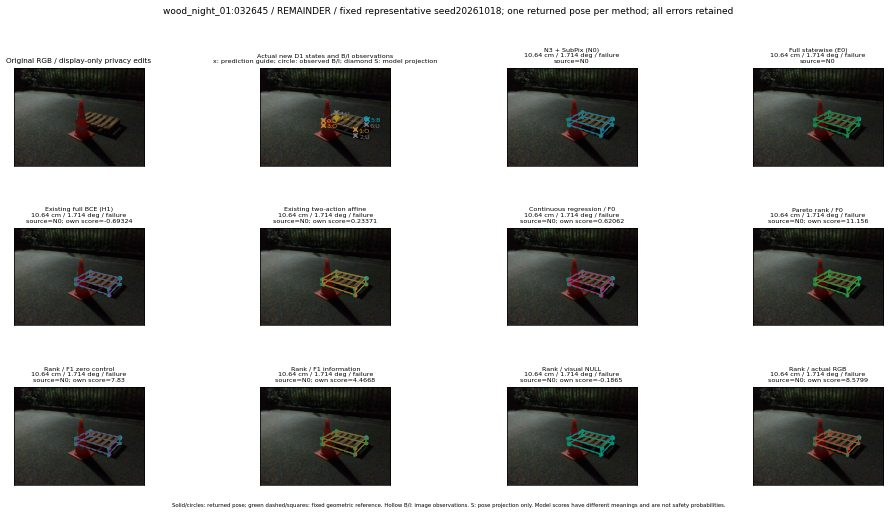

실선은 반환 자세, 초록 점선은 고정 기하 참조입니다. S는 영상 관측이 아닙니다. 점수는 모델별 의미가 다르며 보정된 안전 확률이 아닙니다. 개인정보 처리는 표시 사본에만 적용했습니다.
| 방법·seed | 위치 / 회전 / 공동성공 | 실제 출처 | 선택 후보 | 각 모델 자체 점수 |
|---|---|---|---|---|
| N0 | 10.64 cm / 1.714 deg / failure | N0 | N/A | N/A |
| E0 | 10.64 cm / 1.714 deg / failure | N0 | N/A | N/A |
| E0_REGENERATED | 10.64 cm / 1.714 deg / failure | N0 | E0_REGENERATED | N/A |
| POSEFIX_SUBPIX_PF_ANCHOR | 11.01 cm / 1.306 deg / failure | OTHER | N/A | N/A |
| POSEFIX_SUBPIX_YOLO_ANCHOR | 11.01 cm / 1.306 deg / failure | OTHER | N/A | N/A |
| D1_H1_MLP_s20261018 | 10.64 cm / 1.714 deg / failure | N0 | N0 | -0.6932389736175537 |
| D1_H1_MLP_s20261019 | 10.64 cm / 1.714 deg / failure | N0 | N0 | -0.9407135844230652 |
| D1_H1_MLP_s20261020 | 10.64 cm / 1.714 deg / failure | N0 | N0 | -0.26720163226127625 |
| D1_H1_PAIR_MLP_s20261018 | 10.64 cm / 1.714 deg / failure | N0 | N0 | -0.25860223174095154 |
| D1_H1_PAIR_MLP_s20261019 | 10.64 cm / 1.714 deg / failure | N0 | N0 | -0.41241854429244995 |
| D1_H1_PAIR_MLP_s20261020 | 10.64 cm / 1.714 deg / failure | N0 | N0 | -0.043335020542144775 |
| D1_H1_PAIR_ROLE_AFFINE_s20261018 | 10.64 cm / 1.714 deg / failure | N0 | N0 | 0.23370733857154846 |
| D1_H1_PAIR_ROLE_AFFINE_s20261019 | 10.64 cm / 1.714 deg / failure | N0 | N0 | 0.18942806124687195 |
| D1_H1_PAIR_ROLE_AFFINE_s20261020 | 10.64 cm / 1.714 deg / failure | N0 | N0 | 0.13734133541584015 |
| R_CONT_F0_s20261018 | 10.64 cm / 1.714 deg / failure | N0 | N0 | 0.6206214427947998 |
| R_CONT_F0_s20261019 | 10.64 cm / 1.714 deg / failure | N0 | N0 | 0.7333272695541382 |
| R_CONT_F0_s20261020 | 10.64 cm / 1.714 deg / failure | N0 | N0 | 0.5556837320327759 |
| R_ORDER_F0_s20261018 | 10.64 cm / 1.714 deg / failure | N0 | N0 | 11.15626335144043 |
| R_ORDER_F0_s20261019 | 10.64 cm / 1.714 deg / failure | N0 | N0 | 3.509705066680908 |
| R_ORDER_F0_s20261020 | 10.64 cm / 1.714 deg / failure | N0 | N0 | -11.904918670654297 |
| R_ORDER_F1_ZERO_s20261018 | 10.64 cm / 1.714 deg / failure | N0 | N0 | 7.829989910125732 |
| R_ORDER_F1_ZERO_s20261019 | 10.64 cm / 1.714 deg / failure | N0 | N0 | 3.5304388999938965 |
| R_ORDER_F1_ZERO_s20261020 | 10.64 cm / 1.714 deg / failure | N0 | N0 | 5.68956995010376 |
| R_ORDER_F1_s20261018 | 10.64 cm / 1.714 deg / failure | N0 | N0 | 4.466829299926758 |
| R_ORDER_F1_s20261019 | 10.64 cm / 1.714 deg / failure | N0 | N0 | 4.18034553527832 |
| R_ORDER_F1_s20261020 | 10.64 cm / 1.714 deg / failure | N0 | N0 | 8.081663131713867 |
| V_ORDER_NULL_s20261018 | 10.64 cm / 1.714 deg / failure | N0 | N0 | -0.18650244176387787 |
| V_ORDER_NULL_s20261019 | 10.64 cm / 1.714 deg / failure | N0 | N0 | 1.1225439310073853 |
| V_ORDER_NULL_s20261020 | 10.64 cm / 1.714 deg / failure | N0 | N0 | 0.1292610764503479 |
| V_ORDER_RGB_s20261018 | 10.64 cm / 1.714 deg / failure | N0 | N0 | 8.579876899719238 |
| V_ORDER_RGB_s20261019 | 10.64 cm / 1.714 deg / failure | N0 | N0 | 1.2589997053146362 |
| V_ORDER_RGB_s20261020 | 10.64 cm / 1.714 deg / failure | N0 | N0 | -6.776294708251953 |